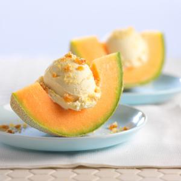

Cantaloup was a very famous food in Hokkaido, the price tag were not that much, it is very sweet, the production period is between june and july is a cantaloupe cultivar farmed in greenhouses in Yūbari, Hokkaido, a small city close to Sapporo.
The Yubari King is a hybrid of two other cantaloupe cultivars: Earl's Favourite and Burpee's "Spicy" Cantaloupe.
Three pairs of Yubari King melons packed in cardboard for transport
A top-grade melon is to be perfectly round and have an exceptionally smooth rind. A portion of the stem, which is snipped with scissors, is left on top for aesthetic appeal.[3] Some Japanese people present Yubari King melons as gifts during Chūgen
Here is a photo of what the cantaloup looks like

The most famous way of eating the cantaloup was just eat the flesh, but some people like to go with a scoop of vanilla ice cream

Cantaloup